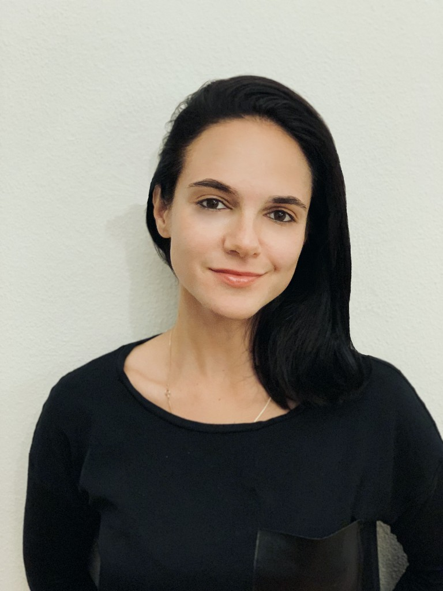

Gayané Arustamyan
Civil Society Engagement Lead
A senior health and human rights expert with 15+ years of experience in HIV program design, grant management, and monitoring & evaluation across multiple regions.
Gayané brings extensive experience with the Global Fund and other major donors, having led large-scale, multi-country health initiatives and a strong track record in aligning donor funding, national programs, and data systems to improve outcomes and accountability.
Role in the Hub: Leads civil society engagement — building relationships with community and patient organizations, and making sure their voice shapes the Hub's design and oversight.